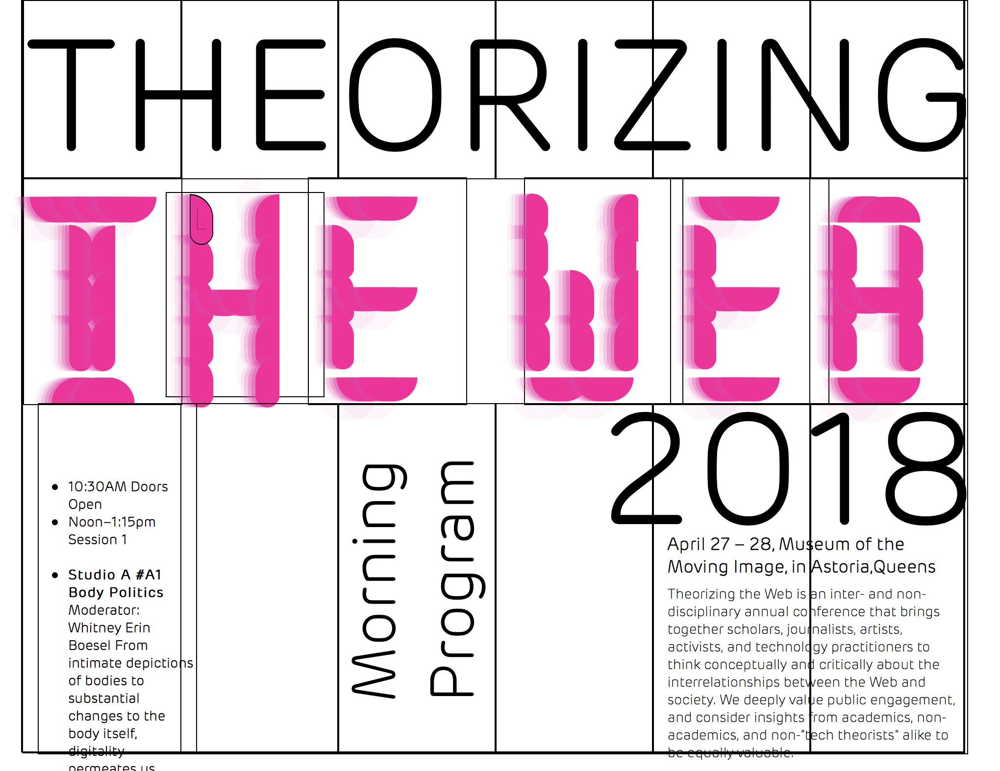
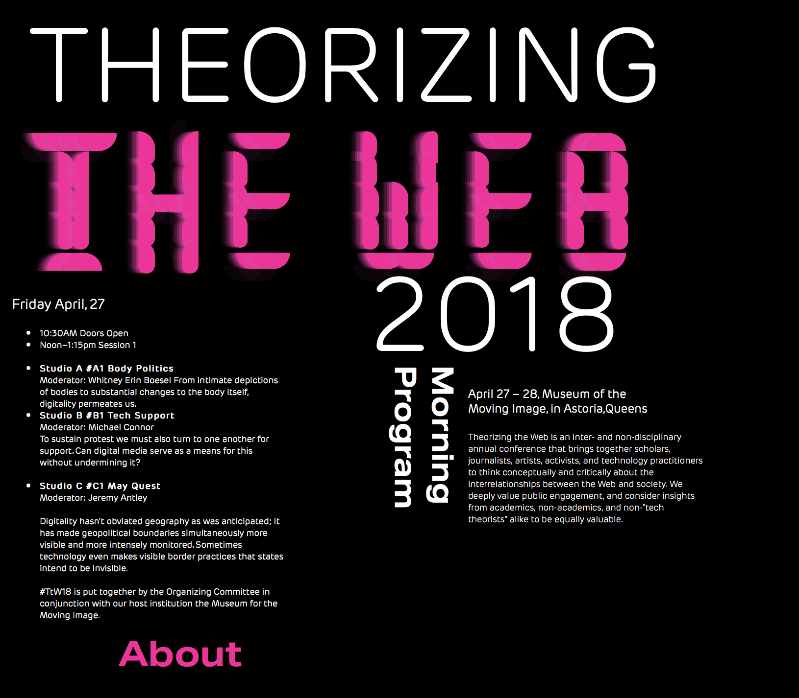
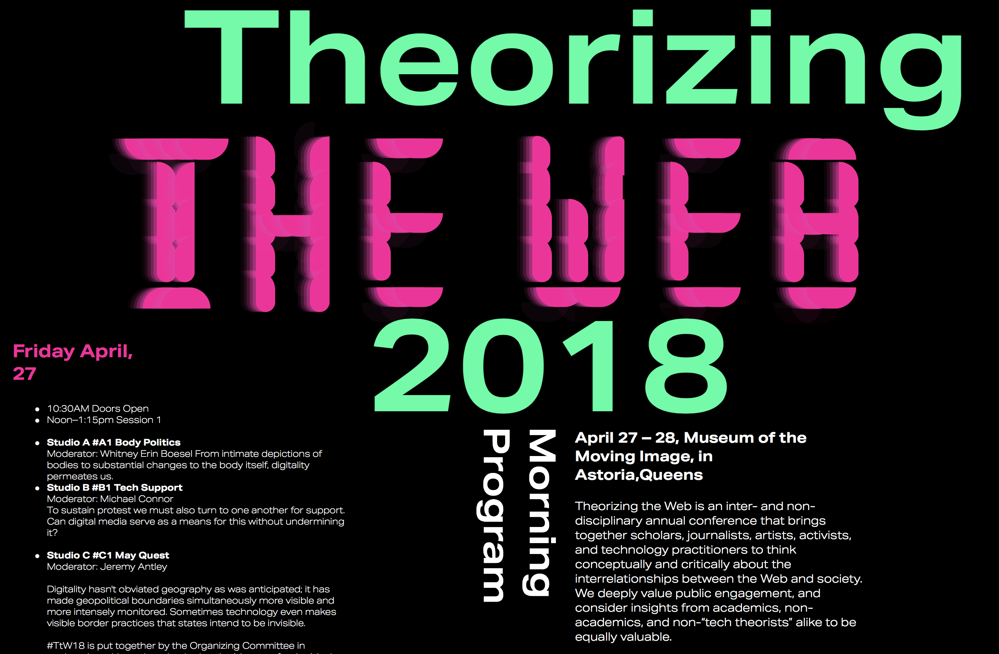
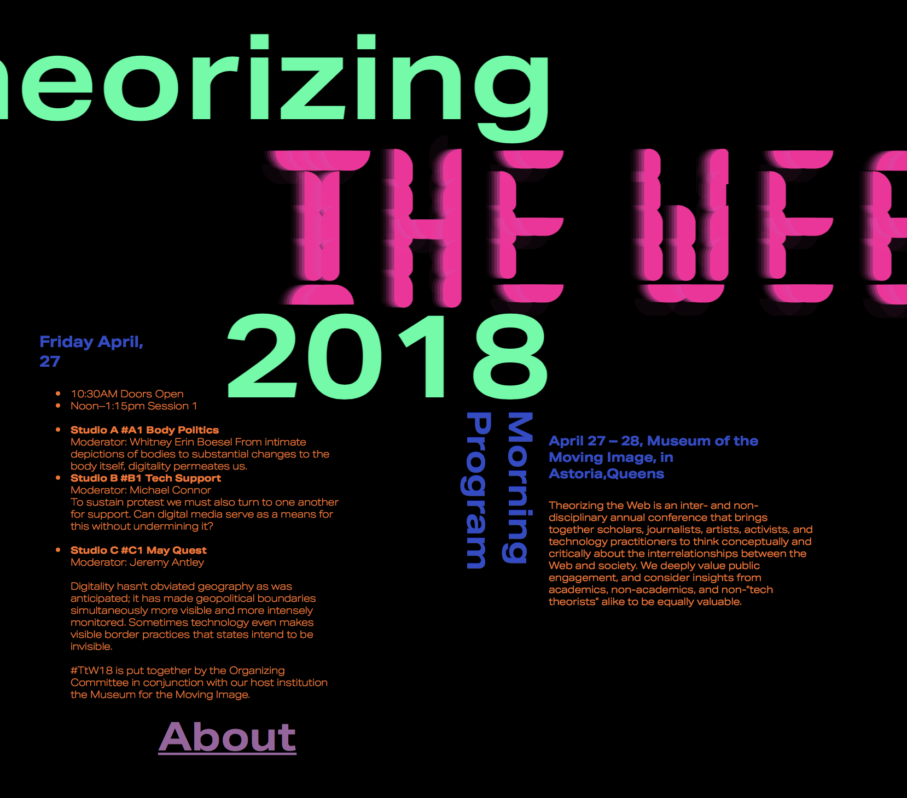

The Event I chose was the "Theorizing the web 2018" event. Because it seemed modern and was about art and technology, I thought I should use my display font in the poster to show the digitial look (which was my intention with the font).

Process Stage 2
I wanted to play around with grid formats, so I started with a less equal grids but was having trouble with the layout. I played around with rotating different lines of text to make the composition more dynamic.

This image is zoomed out so it may look disproportionate
Process 3
I wanted multiple types of movement so I played around with animations trying to create a glitch effect, and having the upper and lower headline moving left to right. I changed the font to something that was more bold to bring it in.I decided to add a glitchy hover effect to the cyan coloured text, so that when you hover over it, it blinks rapidly with changing colours.

This screen capture was took while in movement so it does not look completely aligned
Process 4
I really delve into the animations by the end and applied a gradient change animation to the body text playing slowly to make it more enjoyable to watch. To create a digital look and feel I made the first and third line of text sliging left to right and the middle line used with my display font going the opposite for a sense of dynamics. I kept in the glitch effect for the 2 cyan coloured headlines as a hover effect.Further, I added a link to the about page of the group and to make it attractable I used a glitchy animation of rapidly blinking colours to draw attention and insinuate that you can click it.

This screen capture was took while in movement so it does not look completely aligned